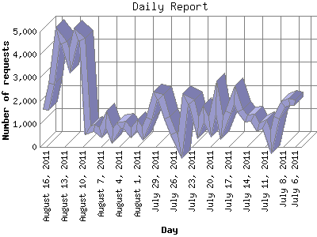

The Daily Report identifies the activity for each day within the reporting period. Remember that one page hit can result in several server requests as the images for each page are loaded.

| Day | Number of requests | Number of page requests | |
|---|---|---|---|
| 1. | July 6, 2011 | 1,904 | 23 |
| 2. | July 7, 2011 | 1,958 | 109 |
| 3. | July 8, 2011 | 1,843 | 83 |
| 4. | July 9, 2011 | 1,267 | 130 |
| 5. | July 10, 2011 | 218 | 5 |
| 6. | July 11, 2011 | 994 | 108 |
| 7. | July 12, 2011 | 843 | 28 |
| 8. | July 13, 2011 | 1,263 | 47 |
| 9. | July 14, 2011 | 1,241 | 38 |
| 10. | July 15, 2011 | 1,586 | 68 |
| 11. | July 16, 2011 | 2,256 | 72 |
| 12. | July 17, 2011 | 1,501 | 48 |
| 13. | July 18, 2011 | 806 | 14 |
| 14. | July 19, 2011 | 2,166 | 160 |
| 15. | July 20, 2011 | 840 | 40 |
| 16. | July 21, 2011 | 1,432 | 62 |
| 17. | July 22, 2011 | 817 | 22 |
| 18. | July 23, 2011 | 1,957 | 35 |
| 19. | July 24, 2011 | 2,097 | 31 |
| 20. | July 25, 2011 | 0 | 0 |
| 21. | July 26, 2011 | 599 | 26 |
| 22. | July 27, 2011 | 1,279 | 36 |
| 23. | July 28, 2011 | 2,170 | 55 |
| 24. | July 29, 2011 | 2,218 | 31 |
| 25. | July 30, 2011 | 1,219 | 41 |
| 26. | July 31, 2011 | 566 | 22 |
| 27. | August 1, 2011 | 942 | 25 |
| 28. | August 2, 2011 | 627 | 12 |
| 29. | August 3, 2011 | 958 | 23 |
| 30. | August 4, 2011 | 915 | 24 |
| 31. | August 5, 2011 | 463 | 18 |
| 32. | August 6, 2011 | 1,189 | 26 |
| 33. | August 7, 2011 | 619 | 20 |
| 34. | August 8, 2011 | 805 | 16 |
| 35. | August 9, 2011 | 716 | 27 |
| 36. | August 10, 2011 | 4,664 | 204 |
| 37. | August 11, 2011 | 4,900 | 257 |
| 38. | August 12, 2011 | 3,742 | 170 |
| 39. | August 13, 2011 | 4,517 | 255 |
| 40. | August 14, 2011 | 4,868 | 254 |
| 41. | August 15, 2011 | 2,750 | 141 |
| 42. | August 16, 2011 | 1,618 | 49 |
Most active day August 11, 2011 : 257 pages sent. 4,900 requests handled.
Daily average: 69 pages sent. 1,691 requests handled.
This report was generated on August 17, 2011 03:49.
Report time frame April 27, 2011 21:08 to August 16, 2011 23:44.
| Web statistics report produced by: analog 5.1 / Report Magic 2.21 |